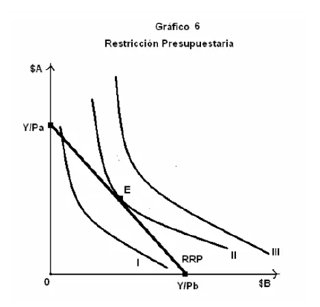
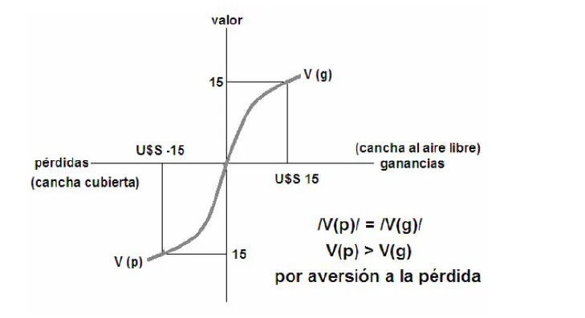
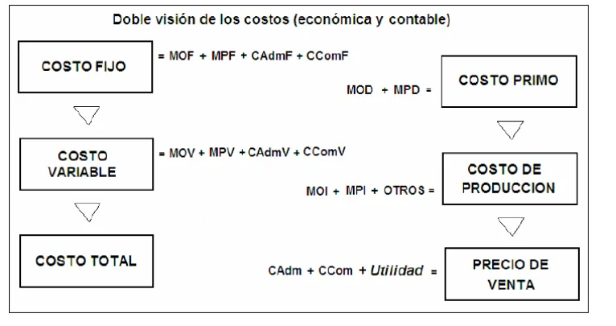
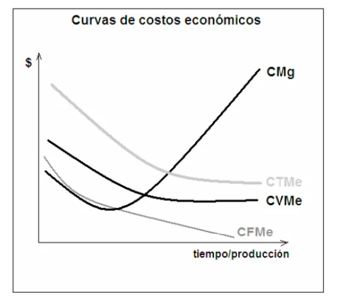

1° parcial
Microeconomía: cómo elige el consumidor, cómo produce la empresa, cuánto le cuesta y cómo se forma el precio en cada tipo de mercado.
Resumen no juzgado. Todavía nadie evaluó si alcanza para estudiar solo con esto.
Lo marcado «Plan viejo» es de 2022 o antes, del plan anterior. Puede no coincidir con lo que se toma hoy.
Cómo viene el examen
Es un formulario de Google con opciones. Revisé tres, de 2023 en adelante.
- 24/06/2023 y 26/07/2024: las mismas 30 consignas de 1 punto cada una. Mezclan opción múltiple y verdadero o falso.
- 05/07/2025: quedaron 15 consignas sin sus opciones, porque quien lo subió solo guardó las preguntas.
Las consignas que cito de 2024 salieron igual en 2023. Las de 2025 repiten temas, con varias redacciones nuevas. Practicá con los tres parciales.
Las citas dicen «compilado, pág. N», con el número impreso en el apunte de la cátedra. Ahí están también los gráficos.
Actores y factores de producción
El apunte reconoce dos actores principales. El individuo incluye a quienes conviven con él y deciden juntos su consumo o inversión. La empresa es una organización que busca ganar dinero. En lo operativo, es una combinación de factores productivos, unidos por la tecnología, para elaborar un producto. (Compilado, págs. 4 y 10.)
Los factores de producción son lo que el individuo aporta. Los clásicos son tres.
| Factor clásico | Qué es | Cómo lo actualiza la cátedra |
|---|---|---|
| Trabajo | Tiempo dedicado a producir | Recursos humanos: además del tiempo, suma experiencia e individualidad |
| Capital | Herramientas y máquinas | Se mantiene |
| Tierra | La porción de corteza terrestre propia | Biósfera: incluye el aire, el mar y lo que se explota en ellos |
La cátedra agrega un cuarto factor, la capacidad empresaria. Son las herramientas científicas y de gestión que obtiene quien combina factores, y que puede aplicar a un emprendimiento nuevo. (Compilado, págs. 6 a 9.)
A cambio de sus factores, el individuo recibe una renta. La gasta en lo necesario, y con lo que queda se da gustos o ahorra. (Compilado, pág. 9.)
Las opciones combinan métodos, personal, biósfera, tecnología y capacidad empresaria. El Final del 25/02/2022 también pidió la función producción con estos factores. Repasá la tabla de arriba.
Qué resuelve un mercado
Un mercado es cualquier conjunto de transacciones de bienes o servicios entre individuos o asociaciones. Se divide en mercados de bienes de consumo y de bienes de producción. El precio funciona como señal. Los precios bajos estimulan el consumo y desaniman la producción. Los altos hacen lo contrario. (Compilado, págs. 30 y 31.)
Una economía de mercado responde tres preguntas (compilado, págs. 31 y 32).
- Qué se produce: lo definen las compras diarias de los consumidores y el deseo de las empresas de maximizar sus beneficios.
- Cómo se produce: lo definen la tecnología y la competencia entre productores.
- Para quién se produce: es una pregunta social. Implica determinar quién consume y cuánto.
La segunda consigna necesita lo que aclara el bloque siguiente.
Sin apunte de la cátedra
La Frontera de Posibilidades de Producción se toma y el compilado no la desarrolla. En el Drive hay una explicación en el resumen de un alumno, pág. 2. Usalo como punto de partida y confirmalo en tu comisión.
Utilidad y excedente del consumidor
Ley de utilidad marginal decreciente
Imaginá que tenés mucha sed y comprás botellas de agua. La primera te da mucha satisfacción. La segunda calma más la sed, pero satisface menos que la primera. Después de la tercera no querés más agua por un largo rato.
En economía, satisfacción se dice utilidad. Hay dos conceptos de utilidad. El cardinal le da un valor numérico a cada bien. El ordinal se fija en el orden en que se eligen, y los economistas no prefieren el primero. (Compilado, pág. 11.)
- Utilidad total (UT): suma las satisfacciones de cada unidad. Aumenta.
- Utilidad marginal (UMg): es la satisfacción de consumir una unidad más. Disminuye.
Esta es una ley fundamental para el apunte. La utilidad marginal es decreciente. (Compilado, págs. 11 y 12.)
La LUMD es descendente porque representa la evolución de...1° parcial, 26/07/2024
De la satisfacción. A medida que se consume una unidad nueva, disminuye la satisfacción de esa unidad. Fuente: compilado, pág. 11.
El compilado no habla de bienes con utilidad marginal negativa. Se ve en el resumen de un alumno, págs. 3 y 8. Confirmalo en tu comisión.
Excedente del consumidor
Si comparás la utilidad marginal con el precio, la primera botella te dio una satisfacción mayor a lo que pagaste. Esa satisfacción sobrante es el excedente del consumidor. Con la botella a 2 pesos, en el ejemplo del apunte, la segunda iguala satisfacción y precio. Por eso dudosamente compres la tercera. (Compilado, págs. 12 y 13.)
De acá sale la paradoja del valor de Adam Smith. Explica por qué un diamante vale más en el mercado que un vaso de agua, aunque nadie puede vivir sin agua. (Compilado, pág. 13.)
Dos consumidores pueden tener excedentes distintos. Si A llega al equilibrio con el diario a 5 pesos y B con el diario a 7, la editorial no puede cobrarles distinto. Entonces ofrece un libro voluntario de 2 pesos, y así se queda con el excedente de B. (Compilado, pág. 16.)
El excedente del consumidor resulta ser...1° parcial, 05/07/2025
La utilidad adicional que obtienen los consumidores con respecto a lo que pagan por un bien. Implica que reciben más de lo que pagan. Fuente: compilado, pág. 13.
El óptimo del consumidor
Suponé que consumís dos bienes, A (alimentos) y B (ropa). Cada combinación se llama cesta de bienes.
- Curva de indiferencia. Une las cestas que te dan la misma satisfacción. Una curva más alta representa más utilidad. Todas juntas forman el mapa de curvas de indiferencia. (Compilado, pág. 14.)
- Recta de restricción presupuestaria (RRP). Tu renta (Y) es el límite. Si gastás todo en A, el máximo es . Si gastás todo en B, es . El segmento entre esos dos puntos es la recta. (Compilado, pág. 15.)
- Óptimo o equilibrio (E). Al superponer las dos, uno y solo un punto de una curva es tangente a la recta. Es la cesta que más satisfacción da con esa renta. Equivale a la mayor UMg por unidad de renta gastada. (Compilado, pág. 15.)

El gráfico es del compilado, pág. 16.
En el modelo del óptimo del consumidor las curvas de indiferencia indican...1° parcial, 26/07/2024
La misma satisfacción con cestas distintas. Sobre cada punto, que es otra cesta, el consumidor experimenta la misma satisfacción y permanece indiferente. Fuente: compilado, pág. 14.
El compilado no usa el término relación marginal de sustitución. La solución de la cátedra del Final 26/02/2016 calcula la de los factores de producción, en Ejercicios. Confirmá en tu comisión cómo la piden para el consumidor.
También está en Preguntas de cada unidad. Practicalo con el armado de la recta de arriba. El Final del 07/07/2017 preguntó qué relación hay entre el equilibrio del consumidor y el del mercado.
Maximizador o satisfacedor
Lo anterior supone un individuo maximizador. Otras visiones, que vienen de la psicología, avisan que muchas veces operamos más como satisfacedores. (Compilado, pág. 16.)
Tversky y Kahneman formularon la función del valor. Llega a dos conclusiones (compilado, págs. 17 y 18).
- Los individuos tratan ganancias y pérdidas de manera asimétrica, y les dan más valor a las pérdidas.
- Analizan los hechos por separado y después contrastan lo que ganan y lo que pierden.

El gráfico es del compilado, pág. 17.
El ejemplo es la cancha de tenis. Dos amigos pagaron 15 dólares por la cancha cubierta y el día sale lindo. Muchos no aceptan perder esos 15 dólares para pagar otros 15 por la descubierta, aunque jugar afuera los satisfaga más.
Demanda
La curva de demanda muestra cuánto están dispuestos a comprar los consumidores a cada precio, con todo lo demás constante. Esa condición se llama ceteris paribus. (Compilado, pág. 32.)
Cuando el precio sube, la cantidad baja. Es la ley de demanda con pendiente negativa, que tiene dos causas (compilado, págs. 32 y 33).
- Efecto sustitución: los consumidores cambian el bien por otro similar más barato.
- Efecto ingreso: con el precio más alto, disminuye la cantidad que pueden comprar.
La demanda del mercado es la suma de las demandas individuales. Cada demanda individual depende de los gustos, el ingreso, el precio del bien y el de los demás bienes. Para el apunte, los gustos son el factor determinante. (Compilado, págs. 33 y 34.)
| Tipo de bien | Qué pasa |
|---|---|
| Normal | Al subir el ingreso, sube la cantidad demandada |
| Inferior | Al subir el ingreso, baja la cantidad demandada |
| Complementario | Sube el precio de uno y baja la demanda del otro |
| Sustituto | Sube el precio de uno y sube la demanda del otro |
(Compilado, pág. 34.)
Moverse sobre la curva o correr la curva
Si cambia el precio, hay un aumento o disminución de la demanda, un movimiento dentro de la curva. Si cambia otra cosa, hay un desplazamiento. Con la oferta pasa lo mismo. (Compilado, págs. 34 y 36.)
El compilado no contesta estas dos en forma directa. Revisá en tu comisión cómo presenta la cátedra el paso del óptimo del consumidor a la curva de demanda. El Final del 06/12/2011 también pidió diferenciar la ley de utilidad marginal decreciente de la ley de demanda decreciente.
Oferta y equilibrio
La curva de oferta relaciona el precio con la cantidad que los productores quieren producir y vender. Tiene pendiente positiva. Depende de los costos, los precios de bienes relacionados, la política del gobierno y factores especiales, como el clima. La oferta del mercado es la suma de las individuales. (Compilado, págs. 35 y 36.)
El equilibrio de mercado es el precio y la cantidad donde se balancean las dos fuerzas. El modelo supone que todos actúan de manera racional. Entonces, en ese punto se consumen todos los bienes producidos, es decir, se vacía el mercado. (Compilado, pág. 37.)
Este es el ejemplo del apunte con discos compactos.
| Precio | Demanda | Oferta | Situación | Presión sobre el precio |
|---|---|---|---|---|
| 1 | 13 | 1 | Escasez | Alza |
| 1,5 | 10 | 4 | Escasez | Alza |
| 2 | 7 | 7 | Equilibrio | Ninguna |
| 2,5 | 4 | 10 | Excedente | Baja |
| 3 | 1 | 13 | Excedente | Baja |
(Compilado, pág. 37.)
Si la oferta se corre a la izquierda, hay escasez y el precio sube hasta un nuevo equilibrio. Si la demanda se corre a la derecha, hay exceso de demanda y el precio también sube. (Compilado, pág. 39.)
Que se «vacíe el mercado» significa...1° parcial, 26/07/2024
Que en el punto de equilibrio se consumen todos los bienes producidos. Fuente: compilado, pág. 37.
En 2025 volvió con otra forma: «un mercado cuyo bien padece obsolescencia tecnológica evoluciona...». También se preguntó «La escasez transitoria en un mercado puede deberse a...». Pensalos con los desplazamientos de arriba. No encontré las respuestas escritas en el apunte.
Elasticidad
La elasticidad precio de la demanda (Ep) mide la variación porcentual de la cantidad demandada cuando el precio sube 1%. (Compilado, pág. 39.)
| Valor | Nombre | Ejemplo del apunte |
|---|---|---|
| Perfectamente elástica | Un cambio mínimo del precio dispara la cantidad | |
| Elástica | Pollo, transporte urbano. Son fáciles de sustituir | |
| Unitaria | Autos: sube 10% el precio y bajan 10% las ventas | |
| Inelástica | Bienes básicos con pocos sustitutos | |
| Perfectamente inelástica | La demanda no cambia con el precio |
(Compilado, págs. 39 y 40.)
La oferta tiene los mismos cinco casos, con su elasticidad Es. (Compilado, págs. 40 y 41.)
En criollo
Si sube una marca de gaseosa y al lado hay otra, cambiás sin pensarlo. Esa demanda es elástica. Si sube la sal, comprás casi la misma, porque no tenés con qué reemplazarla. Esa demanda es inelástica.
La elasticidad de la demanda de un bien o servicio tiene relación...1° parcial, 26/07/2024
Con la existencia de bienes sustitutos. Los productos fácilmente sustituibles tienen demanda elástica, y los básicos con pocos sustitutos, inelástica. Fuente: compilado, págs. 39 y 40.
El Estado en los mercados
Impuestos. Todo impuesto provoca un alza del precio y una baja de la cantidad demandada. Quién lo paga depende de las elasticidades (compilado, pág. 41).
| Demanda | Oferta | Sobre quién cae la mayor parte |
|---|---|---|
| Poco elástica | Muy elástica | Consumidores. Ejemplo, un impuesto a las obras sociales |
| Muy elástica | Poco elástica | Lo contrario. Ejemplo, un impuesto a las cocheras |
Precios máximos y mínimos. Un precio máximo impide vender por encima de ese valor. Un precio mínimo garantiza que el precio no baje de cierto nivel. (Compilado, pág. 42.)
Las soluciones de la cátedra muestran el efecto de un precio fijado por debajo del equilibrio. La oferta se retrae, la demanda se expande y aparece escasez. (Soluciones de los finales del 06/05/2016 y del 18/08/2016, en Ejercicios.)
En 2025 se preguntó «La imposición de un "precio mínimo" busca estimular a los...» y «La imposición de un impuesto y su recaudación se basa en...». Del primero, el apunte no da el objetivo. Buscalo en clase.
Tipos de mercado
| Tipo | Oferentes y demandantes | Producto | Rasgos del apunte |
|---|---|---|---|
| Competencia perfecta | Muchas empresas pequeñas | Idéntico | Ninguna afecta el precio. Libre entrada y salida |
| Monopolio | Un solo oferente | Sin sustituto cercano | Nace del control de un factor, una cesión exclusiva o una patente |
| Monopsonio | Un solo comprador | Cualquiera | Maneja el precio. No hay barreras de entrada importantes |
| Oligopolio | Pocos vendedores | Homogéneo o diferenciado | Cada uno influye sobre el precio. Hay interdependencia estratégica |
| Competencia monopolística | Muchos oferentes | Diferenciado | Libre entrada y salida. Compiten en características del producto |
(Compilado, págs. 42 a 45.)
La competencia imperfecta da a los oferentes algún control sobre el precio. Puede tener barreras de entrada, como economías de escala, restricciones legales, diferenciación de productos y publicidad. (Compilado, pág. 43.)
Hay dos tipos especiales de oligopolio. El duopolio tiene dos productores. La colusión o cartel es una organización de competidoras que acuerdan precios y producción, y así forman un monopolio. (Compilado, pág. 44.)
Un cártel surge de un mercado de tipo...1° parcial, 26/07/2024
De un oligopolio. El apunte lo presenta como un tipo especial de oligopolio, y agrega que los acuerdos forman un monopolio. Fuente: compilado, pág. 44.
Barreras económicas, verdadero o falso. Monopsonio en alimentos minoristas, verdadero o falso. Qué diferenciaciones hay en competencia monopólica. Quién puede influir en el precio con la cantidad producida. En 2025, «El poder de un mercado monopolítico se basa en...», «El ciclo de un mercado de competencia monopolítica resulta de...», «El mercado que requiere la asignación de cuotas de producción y depende de su cumplimiento es...» y «Un estado suele ser un gran...». El Final del 25/02/2022 pidió un ejemplo de competencia monopolística y qué lo hace destacar.
Decisiones de producción
La función producción muestra la cantidad máxima que se puede lograr con distintas combinaciones de factores, dadas las técnicas y la tecnología. Una forma general es esta. (Compilado, pág. 19.)
K es el factor fijo, generalmente capital. L es el factor variable, sobre todo trabajo.
- Curva isocuanta: une las combinaciones distintas de K y L que dan el mismo nivel de producción. (Compilado, pág. 20.)
- Sendero de producción: es el camino de una empresa que aumenta la cantidad y respeta la proporción de factores de su función. Ejemplo, . (Compilado, pág. 20.)
- Recta isocosto: son las cantidades de cada factor que se pueden comprar con el monto disponible. Es la restricción presupuestaria de la empresa. (Compilado, pág. 21.)
Al combinar isocuantas e isocosto, se ve qué procesos son factibles. En el gráfico del apunte, la empresa alcanza el punto B y no el A, porque a A no le alcanza el presupuesto. (Compilado, pág. 22.)
Las dos definiciones están en la lista de arriba. Compará cada opción con lo que dice el apunte.
La recta isocosto es la limitación presupuestaria que tiene en la obtención de su óptimo...1° parcial, 26/07/2024
La empresa. El precio de los factores y el monto disponible establecen una restricción presupuestaria a su deseo productivo. Fuente: compilado, pág. 21.
Rendimientos decrecientes
Una solución de la cátedra lo explica con un factor fijo. Si sumás trabajadores sobre el mismo equipamiento, cada unidad adicional de trabajo genera un aumento menor de la producción que la anterior. Esos rendimientos decrecientes son característicos de las funciones con un factor fijo. El producto marginal puede volverse negativo por congestión en la fábrica. Fuente: Final 06/05/2016, solución, pág. 3 de la hoja.
En criollo
Imaginá una cocina con dos hornallas. El segundo cocinero ayuda mucho. El quinto se choca con los demás y aporta poco, porque las hornallas siguen siendo dos.
Sin apunte de la cátedra
Los rendimientos a escala se toman y el compilado no los define. El Drive solo los explica en el resumen de un alumno, págs. 6 y 7. Otro resumen de alumno describe los rendimientos decrecientes al revés, así que confirmá estas definiciones en tu comisión.
En 2025, «Un rendimiento decreciente a escala implica...» y «La Ley de Rendimientos Decrecientes se basa en...». Un verdadero o falso de 2024 mezcla los dos conceptos: «implica la disminución de la producción ante un cambio de escala». No los confundas.
Costos
Un costo es una erogación hecha para crear un producto o servicio. La administración y la economía lo miran distinto. (Compilado, págs. 23 y 24.)
Visión de la administración: el proceso de acumulación de costos
El proceso de acumulación de costos (PAC) suma las erogaciones hasta llegar al costo total de una pieza. Las clasifica de dos maneras (compilado, pág. 24).
- Costos directos (CD): se identifican directa y totalmente con la pieza.
- Costos indirectos (CI o CIF): la pieza se identifica con una parte de la erogación.
- Por rubro: mano de obra (MO), materias primas (MP) y otros.
Después se suman administración y comercialización, y al final la utilidad deseada, la ganancia neta esperada. (Compilado, pág. 25.)
El apunte junta las dos visiones en un cuadro. Del lado de la administración, mano de obra y materia prima directas forman el costo primo. Del lado de la economía, fijos y variables forman el costo total. (Compilado, pág. 28.)

El PAC no es estático
Al salir al mercado, el precio puede coincidir o no con el voto monetario de los consumidores. Si no coincide, el PAC se ajusta (compilado, págs. 25 a 27).
- Precio inicial bajo: se agrega calidad o elementos novedosos, sobre todo si hay competencia.
- Precio inicial alto: se recortan costos, en especial indirectos, y suele afectarse la calidad.
Los consumidores al momento de elegir comprar un bien o servicio ejercen su...1° parcial, 26/07/2024
Voto monetario. El apunte lo usa al comparar el precio de venta con la voluntad de los consumidores. Fuente: compilado, pág. 25.
Cuándo hablamos de "costo primo", hablamos de...1° parcial, 26/07/2024
De costos directos. El cuadro del apunte lo arma con MOD más MPD, la mano de obra y la materia prima directas. Fuente: compilado, pág. 28.
Repasá la definición de costo indirecto de arriba. No encontré esta respuesta escrita en el apunte.
Visión de la economía: fijos, variables y marginal
La economía estudia el desempeño a lo largo del tiempo (compilado, págs. 24, 28 y 29).
- Costos fijos (CF): no varían en el corto plazo.
- Costos variables (CV): aumentan con el nivel de producción.
- Costos medios (CMe): cada costo dividido por la cantidad producida.
- Costo marginal (CMg): lo que cuesta producir una unidad más.
Las curvas tienen estas formas (compilado, págs. 29 y 30).

| Curva | Forma | Por qué |
|---|---|---|
| CFMe | Descendente | El mismo costo fijo se reparte entre más unidades |
| CVMe y CTMe | En U alisada | Se explican por el comportamiento del CMg |
| CMg | En U | Alto al inicio, baja al usar mejor los factores y sube por rendimientos decrecientes |
Mientras la curva de CVMe tiene pendiente negativa, va por encima de la de CMg. Cuando se incorporan factores, empieza a subir y el CMg ya la superó. (Compilado, pág. 30.)
Quiz del 1° parcial
Elegí una opción para ver la explicación. Las que dicen «Se tomó» salieron de exámenes reales.
- 1
A medida que consumís más unidades de un bien, ¿qué pasa con la utilidad total y la marginal?
La utilidad total suma las satisfacciones y aumenta. La de una unidad más disminuye.
- 2
El excedente del consumidor es...
Se tomó: 1° parcial 05/07/2025, adaptada
Implica que recibimos más de lo que pagamos.
- 3
El óptimo del consumidor se encuentra donde...
Ese punto es la cesta que mayor satisfacción da de todas las posibles con ese nivel de renta.
- 4
Un cambio en los gustos de los consumidores, con el precio constante, provoca...
Si cambia el precio hay un movimiento dentro de la curva. Si cambia otro factor, un desplazamiento.
- 5
Un bien inferior es aquel cuya cantidad demandada...
El apunte da como ejemplo los alimentos poco nutritivos y los bienes de baja calidad.
- 6
La elasticidad de la demanda de un bien se relaciona con...
Se tomó: 1° parcial 26/07/2024, adaptada
Los productos fácilmente sustituibles tienen demanda elástica. Los básicos con pocos sustitutos, inelástica.
- 7
Con demanda poco elástica y oferta muy elástica, un impuesto...
Todo impuesto sube el precio y baja la cantidad. En este caso, la mayor parte recae sobre los consumidores.
- 8
Un cartel es un tipo especial de...
Se tomó: 1° parcial 26/07/2024, adaptada
Es una organización de competidoras que acuerdan precios y producción, y así forman un monopolio.
- 9
¿Qué distingue a la competencia monopolística de la competencia perfecta?
Hay muchos oferentes y libre entrada y salida. La diferencia está en las características del producto.
- 10
Una curva isocuanta une combinaciones de factores que dan...
Son combinaciones distintas de K y L con un mismo nivel de producción.
- 11
Un costo es directo cuando...
La clasificación entre directo e indirecto depende de esa identificación. Tanto mano de obra como materiales pueden ser una u otra cosa.
- 12
En el cuadro del apunte, el costo primo se arma con...
Se tomó: 1° parcial 26/07/2024, adaptada
El cuadro lo escribe MOD + MPD. Con MOI, MPI y otros se llega al costo de producción.
- 13
¿Por qué la curva de costo marginal tiene forma de U?
Ver qué dice el material
Al principio es alta, porque los factores no elevan demasiado la producción. Baja cuando se usan mejor. Vuelve a subir por los rendimientos decrecientes.
¿Cómo te fue?
Todavía no respondiste ninguna.